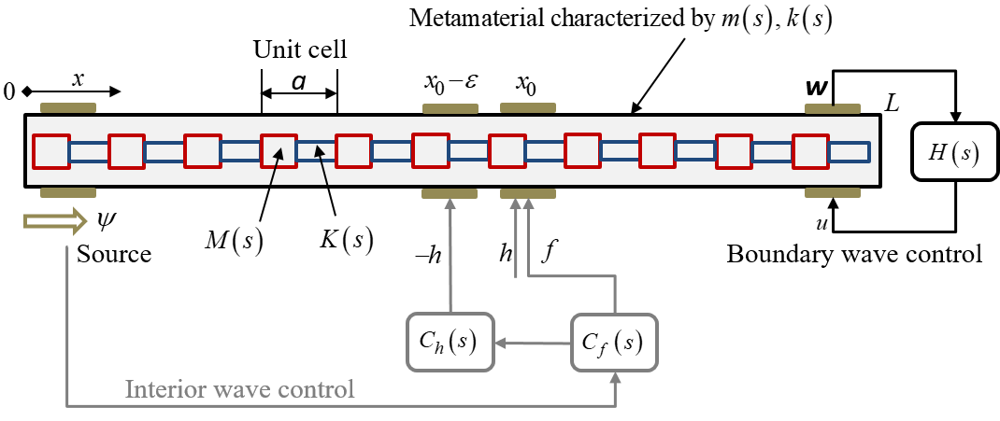
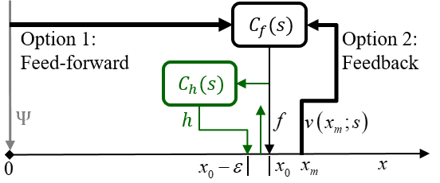
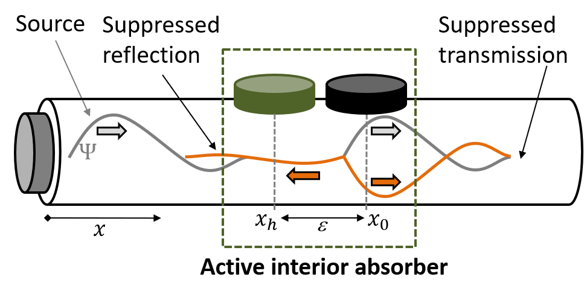
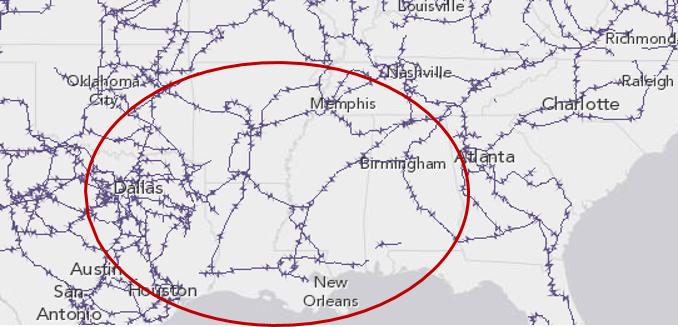
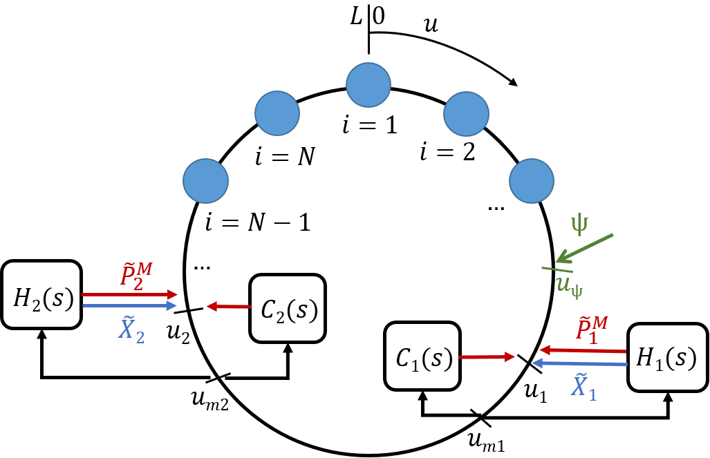
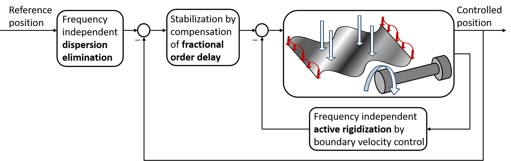

Real-Time Creation of Wave Absorbers and Artificial Acoustic Fields
Active boundary and interior wave absorbers
Absorbers
We designed active absorbers for wave propagation in a class of mechanical transmission-line metamaterials. The first absorber achieves a complete elimination of wave reflections from the metamaterial boundaries independently of the frequency regime. The associated controller was implemented in a feedback loop. The second absorber blocks wave propagation beyond a prescribed location at the metamaterial interior with minimized back-scattering, thus generating a sink without any physical boundary present. It was implemented in a feed-forward loop via a unique near uni-directional control wave method, using two concentrated actuators. Both the interior and boundary absorbers were based on an exact fractional order transfer function model that we derived for the metamaterial. The model explicitly exhibits essential wave characteristics, including delays, dispersion, impedance, boundary reflections etc. The resulting controllers were of fractional order as well, and were realized via a dedicated approximation technique.

M<0, K<0, boundary absorber OFF

M<0, K<0, boundary absorber ON

M>0, K>0, interior absorber ON

In elastic transmission-line metamaterials with zero/negative parameters
In acoustic tube waveguides
We created an absorber in the interior of a one-dimensional acoustic waveguide, using active control. The control goal was suppressing wave propagation beyond a prescribed region of the waveguide, but without perturbing the propagation within that region. Unlike boundary control, achieving full absorption in the interior constitutes a challenge of creating both a non-transmitting and a non-reflecting sink. We overcame this challenge by introducing a near uni-directional control wave, created with two concentrated actuators. The residual back-action wave is minimized based on the available control energy. We employed this control wave in two algorithms, a feed-forward and a feedback one, which we denoted by Interior Wave Suppression.


In ring waveguides with application to power grids
We studied swing dynamics in electric power grids using a continuous approach. Rather than addressing the problem as oscillations in a discrete system, we modeled the swing dynamics as a propagating electro-mechanical wave. We used a ring geometry with a one-dimensional wave equation to analyze the underlying dynamics. We used the Interior Wave Suppression control method to damp the system dynamics.
Unlike domains with boundaries such as strings, any concentrated input to the ring generates waves in two directions, thereby preventing total absorption. We showed that the modeling and control methods are implementable in a power grid using Phasor Measurement Units (PMU) as sensors and Flexible AC Transmission System (FACTS) devices, such as Thyristor Controlled Series Compensator (TCSC), as actuators.


In nonstiff elastic structures vibrating in dispersive medium
We proposed a control algorithm for tracking of nonstiff elastic systems, such as bars in axial or torsional vibration or membranes in transverse vibration, etc., in dispersive medium. The algorithm was based on exact transfer function modeling with fractional order delay-like exponential terms, representing the response evolution due to dispersion. The control scheme involved actuation and measurement only at the structure boundaries, with three main loops.
The first was a velocity control loop that eliminated boundary wave reflections, thus suppressing the system's vibratory modes and actively rigidizing it. The second was position stabilization loop, which compensated the fractional order delay and placed the closed loop poles in any desired location. Finally, a pre-compensator eliminated medium dispersion regardless of the frequency, and produced a rational tracking system with a pure delay.
All control loops OFF
Angular position
Active rigidization loop ON
Angular position
x/L

Related publications
L. Sirota and A. M. Annaswamy.
Automatica, vol. 117, p. 108855, 2020.
Active wave suppression in the interior of a one-dimensional domain
L. Sirota, and A. M. Annaswamy.
Automatica, vol. 100, pp. 403–406, 2019.
Modeling and control of wave propagation in a ring with applications to power grids
L. Sirota, and A. M. Annaswamy.
IEEE Transactions on Automatic Control, vol. 64, no. 9, pp. 3676–3689, 2018.
Fractional order control of the two-dimensional wave equation
L. Sirota, and Y. Halevi.
Automatica, vol. 59, pp. 152–163, 2015
Fractional order control of flexible structures governed by the damped wave equation
L. Sirota, and Y. Halevi.
American Control Conference, 2015. pp. 565–570.